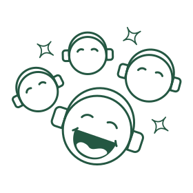
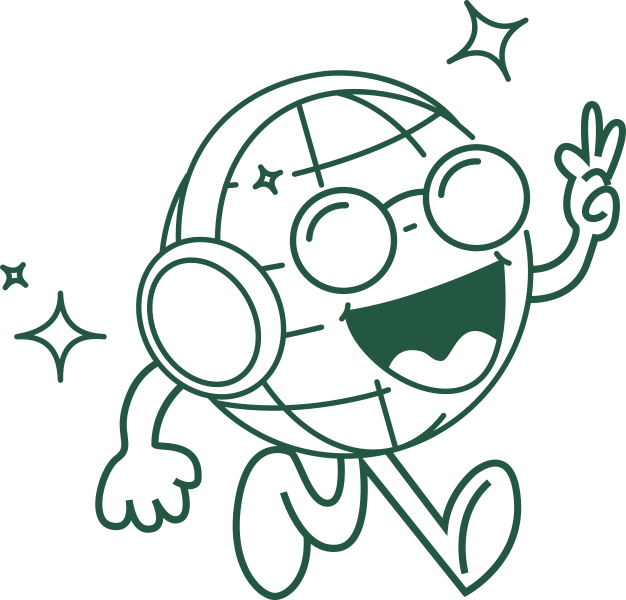

Stap 1
Selecteer je datum
Geef aan op welke datum jouw event plaatsvindt. Wij nemen contact op voor de aflevering. Woon je in Zuid-Holland, grote kans dat wij gratis kunnen brengen en ophalen.

Stap 2
Kies je box
Hoeveel mensen nodig je uit? Kies daar een passende box bij en vul aan met extra koptelefoons en/of andere feest artikelen!

Stap 3
Party time!
Aansluiten en genieten van jouw silent disco ervaring!